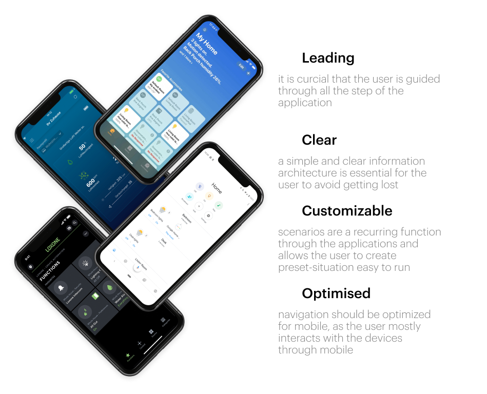
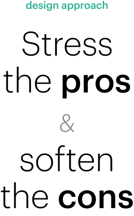
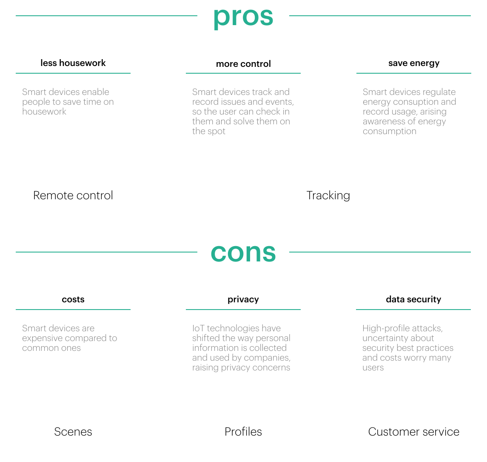
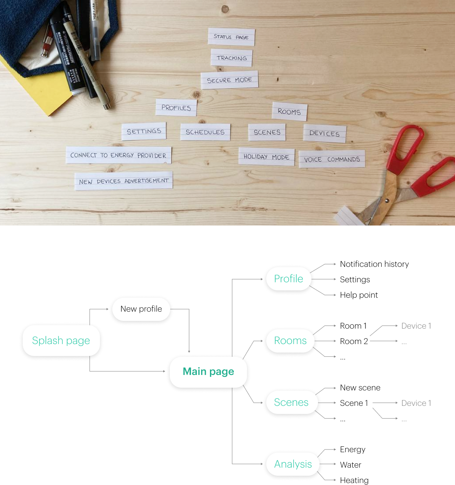
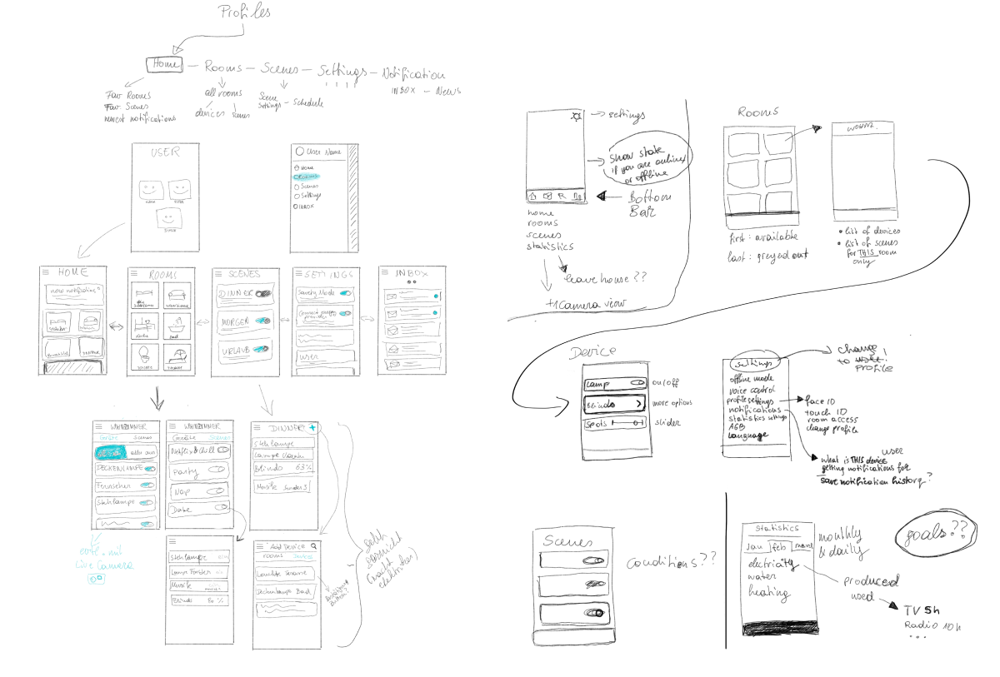
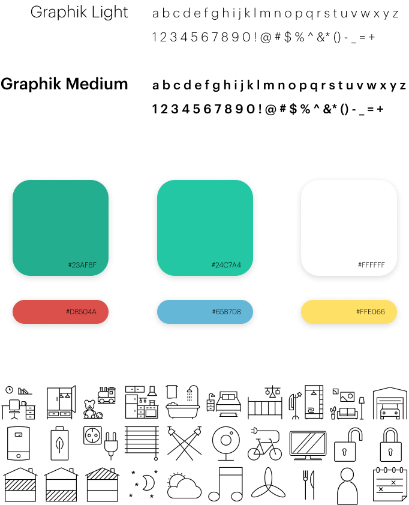

easymaster
Smart home manager app for HMI
Brief: design UX and UI of the easymaster app for HMI automation systems
Summary
The challenge For a one-month assignment, three colleagues and I designed an application for the Austrian organisation HMI.
HMI’s business focuses on building automation: they deliver structures which thinks independently and learns from their users. They had already implemented a working mobile application to control their smart home system, but it was completely lacking a well-thought-through UX and a refined UI. The organisation asked us to prototype alternative solutions for them.
The solution Based on the organisation requirements, we developed an application to deliver a pleasurable user experience. In the end, the organisation chose our prototype as the basis for their actual application among all the proposals from the several teams, endorsing our design choices.
Context
We began analysing competitors to understand the state of the art. We identified four main lessons from our research: guide all the step in the application; design a simple and clear information architecture; create scenarios situations which occur often; optimise for mobile use.
Concept
We then set our design approach to help us design with a clear goal in mind. IoT technology is still quite discussed, therefore people can avoid it although fascinating by its benefits. In order to adress this issue, we designed the application for HMI to stress the pros that they desire and soften cons that they scare, to convince the user that this service is valuable for them.
Design strategy
Upon our research, we set the main pros and cons related to smart buildings.
These elements enables us to guide the design of the application. Hence, along with the functions requested by the client, we brainstormed other ones that we thought would better answer to the users’ expectations, also taking into account the analysis of competitors.
Application structure
It was particularly critical for such an application to have a clear information architecture. We tackle this issue by using card sorting to organise the functions that we had defined. Each member of the team sorted the functions and then we discussed together each proposal. We designed the final information architecture by combining the best features of these options.
Design experimentation
We developed various wireframes and sketches to further the architecture of information and experiment with many options. Thanks to this work, we defined UI elements and specific interactions.
Visual design
Finally, we analysed HMI's brand identity to develop a design system coherent with their communication system. The brand provided us all their guidelines along with various material (font, icons, ...) that they already have agreed on.
Developed with:
Sofiyan Biadsi,
Nina Botthof,
Valentina Gatterer